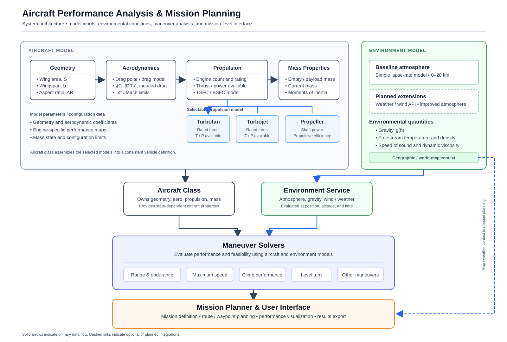
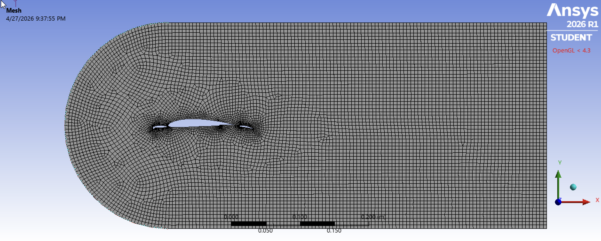
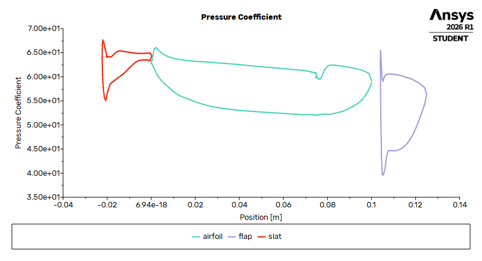
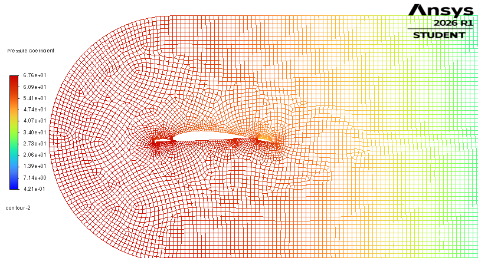
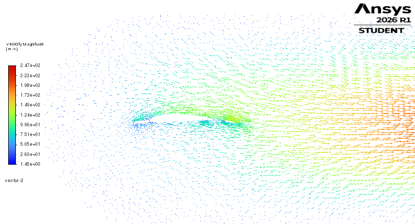

AIRCRAFT MODEL (Active C++ & Planned Refactor)
- Geometry: area S, span, AR
- Aerodynamics: CD0, k, CLmax, wave drag (planned)
- Propulsion: virtual TA/PA, TSFC/BSFC (planned)
- Mass/Inertia: weight W, inertia Iij (planned)
- Subclasses: Turbofan σm(1−cM) · Turbojet TSL·σm · Propeller ηp·Pshaft/V
ENVIRONMENT
- Active: 0–20 km ISA →
AtmosphereState - T, P, ρ, a = √(γRT); tropopause 11,000 m
- Next-gen (dashed in plan): TrajSim, EquilFlow & Wind API, Matrix/Vector_JD
MANEUVER & PERFORMANCE SOLVERS
- Golden-section Vclimb
- 70-iter ceiling bisection
- 1000-step Simpson time-to-climb
- Sustained turn (stall vs Ps=0 thrust limit) · instantaneous pull-up
- Next: 6-DOF ODE
MISSION PLANNER + INTERACTIVE GUI
- In progress
Implemented Physics Engine & Numerical Solvers (Airplane.cpp)
- Polymorphic Architecture: Abstract
Airplanebase class encapsulates geometry (S, AR, W), parabolic drag polar (CD = CD0 + k·CL²), two-layer ISA atmosphere, and maneuver solvers, while concrete subclasses override pure virtualthrustAvailable(V, h)andpowerAvailable(V, h):Propeller: Pshaft = max(0, PSL·(1.132σ − 0.132)), TA = ηp·Pshaft / V.Turbojet: TA = max(0, TSL·σ^m), PA = TA·V.Turbofan: First-order Mach lapse TA = max(0, TSL·σ^m·(1 − c·M)).
- Two-Region ISA Atmosphere (
Airplane::isa): Models tropospheric lapse (h ≤ 11 km, T = T0 − L·h, P = P0·(T/T0)^(g/RL)) and isothermal stratosphere (h > 11 km, exponential pressure decay) to returnAtmosphereState {T, P, rho, a}. - Numerical Optimization & Integration Methods:
bestClimbSpeed(h): 100-iteration Golden-Section Search (ε = 10⁻³ m/s) over [max(1.0, 1.001·Vstall), 300 m/s] maximizing specific excess power Ps = (PA − PR)/W.serviceCeiling(): Dynamic bracket expansion (20 km → 50 km cap) followed by 70-iteration Bisection root-finder for ROCmax(h) = 0.508 m/s (100 ft/min).timeToClimb(h1, h2): 1,000-interval Composite Simpson’s Rule (1, 4, 2, ..., 4, 1) integrating ∫ dh / ROC(h) with singularity guards (ROC < 10⁻⁹ m/s → ∞).
- Sustained Turn & Pull-Up Envelope: Computes stall limit nstall = q·S·CLmax / W and Ps = 0 thrust limit nthrust = √((TA − q·S·CD0)·q·S / (k·W²)) to evaluate turn rate ψ̇ = g√(n² − 1)/V, turn radius R = V²/(g√(n² − 1)), and pull-up radius R = V²/(g(n − 1)).
Next-Phase Architecture Expansion: Wiring in dormant TrajSim dependencies (Matrix.h, Vector_JD.h, EquilFlow.h) and refactoring from inheritance to decoupled subsystem composition with numerical ODE trajectory integration and Euler/quaternion attitude kinematics.

Conducted 2D planar steady-state pressure-based RANS simulations using a structured C-mesh and k-ω SST turbulence model to resolve adverse pressure gradients and boundary-layer separation across a clean NACA 4412 baseline and three high-lift configurations (α = 0°). Personally executed the ANSYS Fluent simulations for Configuration A (5° Slat / 13° Flap) and Configuration B (20° Slat / 13° Flap):
| Configuration | Slat / Flap Angle | Suction Peak & Boundary-Layer Physics | Flight Regime & Design Tradeoff |
|---|---|---|---|
| Clean Baseline | 0° / 0° | Single leading-edge suction peak (Cp ≈ −0.85); 1 stagnation point; single boundary layer stalls earliest. | Cruise: Lowest drag, highest cruise efficiency, lowest CLmax. |
| Config A (My Sim) | 5° Slat / 13° Flap | Triple-peak load sharing (slat, main, flap); thin wake; attached flow with minimal trailing-edge separation. | High L/D Efficiency: Highest lift-to-drag ratio among high-lift cases. |
| Config B (My Sim) | 20° Slat / 13° Flap | High-momentum slat gap jet re-energizes main boundary layer, offloading main suction peak to Cp ≈ −0.45 to −0.50. | Takeoff Balanced: High CL and delayed stall with moderate drag penalty. |
| Config C | 15° Slat / 30° Flap | Maximum camber & stacked circulation across 3 elements; strong adverse pressure gradient induces flap recirculation wake. | Landing Max-Lift: Highest CLmax and steep-approach drag. |



